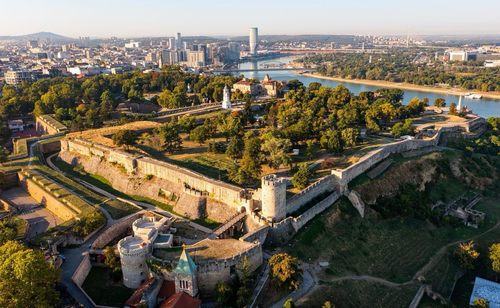

01 · Capitale
Belgrado
Vivace, stratificata e piena di contrasti. La storia passa dalla fortezza che domina la confluenza tra Sava e Danubio alle testimonianze dell'epoca jugoslava e del brutalismo. Il Museo della Jugoslavia e la Casa dei Fiori permettono di entrare ancora di più nel Novecento del Paese.
Poi c'è la Belgrado contemporanea: bohemienne, notturna e completamente diversa dalla natura che incontreremo poco dopo.